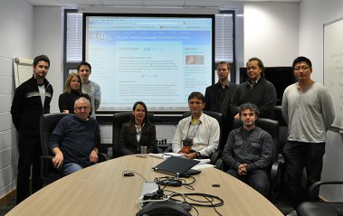

News
March, 2012. We launched our new tool for online patent translation:
Read more...
June, 2011. Paper presented at NLPCS 2011. Alexandru Ceausu and Dan Tufis: Addressing SMT Data Sparseness when Translating into Morphologically-Rich Languages.
June, 2011. PLuTO passes Year One Review
May, 2011. Presented "Experiments on Domain Adaptation for Patent Machine Translation in the PLuTO project" at the EAMT 2011 user track.
April, 2011. PLuTO's Annual general meeting in Amsterdam.
January, 2011. Presented "Rich morpho-syntactical descriptors for factored machine translation with highly inflected languages as target" at the Workshop on Machine Translation and Morphologically-rich Languages, University of Haifa, Israel, 23-27 January, 2011
October 19, 2010. I participated to my first PLuTO project meeting. 